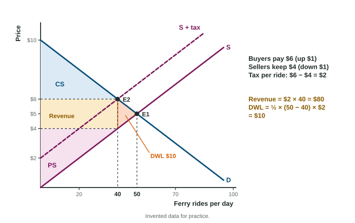

The Effects of Government Intervention in Markets
Price ceilings, price floors, quotas, taxes and subsidies change the price signals and the quantity traded.
Part 1 · Hook
Why this matters
Part 2 · Before you start
What this builds on
Part 3 · Prerequisite check
Quick check before you start
1. At a price below equilibrium, quantity demanded exceeds quantity supplied. This is
- a shortage
- a surplus
- an equilibrium
- a shift in demand
Show the answer
Below equilibrium, buyers want more than sellers offer.
- Correct: a shortage:
- a surplus:
- an equilibrium:
- a shift in demand:
2. Consumer surplus is the area
- under demand and above the price, out to the quantity traded
- above supply and below the price
- under the supply curve
- price times quantity
Show the answer
It is what buyers would pay minus what they pay.
- Correct: under demand and above the price, out to the quantity traded:
- above supply and below the price:
- under the supply curve:
- price times quantity:
3. The side of a market that responds less to price changes has the
- less elastic curve
- more elastic curve
- flatter curve through the same point
- larger surplus by definition
Show the answer
Elasticity measures how much quantity responds to price.
- Correct: less elastic curve:
- more elastic curve:
- flatter curve through the same point:
- larger surplus by definition:
Part 4 · See it
See it first

Part 5 · Step by step
How it works, step by step
- A per-unit tax is collected from sellerssupply shifts up (left) by the amount of the tax
- Supply shifts upbuyers pay a higher price, sellers keep a lower one, and fewer units are traded
- Fewer units are tradedthe surplus on the units no longer traded is lost: a deadweight loss
- The units still traded are taxedthe government collects the tax times the new quantity, paid partly by each side
Part 6 · Key ideas
Key ideas
- Price ceiling (maximum) binds below equilibrium: a shortage, and only Qs is traded. Price floor (minimum) binds above equilibrium: a surplus, and only Qd is traded.
- A per-unit tax shifts supply up by the tax: buyers pay more, sellers keep less, quantity falls. Revenue = tax × the new quantity.
- A per-unit subsidy shifts supply down: buyers pay less, sellers get more, quantity rises. Cost = subsidy × the new quantity, the whole rectangle.
- Deadweight loss: total surplus lost on units not traded (or traded past the equilibrium), the triangle between demand and supply.
- Tax incidence: the less elastic side of the market bears more of the tax, whoever hands it to the government. A quota cuts quantity and raises the price.
Part 7 · Misconception
A common mistake
The wrong idea: The cost of a subsidy is the small area between the curves past the old quantity, and tax revenue runs out to the original quantity.
What actually happens: Both rectangles use the quantity after the policy. The subsidy cost is the per-unit subsidy times the new, larger quantity: the whole rectangle between the two prices. Tax revenue is the tax times the new, smaller quantity. The triangle between the curves is deadweight loss.
Part 8 · Check yourself
Check yourself
Exam-style questions. Anything you miss goes into your review queue.
Graph
A market with a per-unit tax, areas lettered
1. In the graph, a per-unit tax is collected from sellers. Which areas together are the government's tax revenue?
- Areas c and e
- Areas b, c, d and e
- Areas b and d
- Area a
Show the answer
Tax revenue is the tax per unit (the gap between the price buyers pay and the price sellers keep) times the quantity after the tax: the rectangle made of areas b and d.
- Areas c and e: Those two triangles are the deadweight loss.
- Areas b, c, d and e: That runs the rectangle out to the old quantity; only units still sold are taxed.
- Correct: Areas b and d: Right: the rectangle between the two prices, out to the new quantity.
- Area a: Area a is consumer surplus after the tax.
2. In the graph, which areas are the deadweight loss of the tax?
- Areas c and e
- Areas b and d
- Area f
- Areas a and f
Show the answer
The deadweight loss is the surplus on units no longer traded: the triangle between demand and supply from the quantity after the tax out to the original quantity, areas c and e.
- Correct: Areas c and e: Right: the triangle between the curves past the new quantity.
- Areas b and d: That rectangle goes to the government as revenue; it is not lost.
- Area f: Area f is producer surplus after the tax.
- Areas a and f: Those are the surpluses buyers and sellers keep.
Scenario
Halden caps its rents
Halden is an invented city. Its apartment market clears at a monthly rent of $1,200, with 3,200 apartments rented. The city council passes a rent ceiling of $900 a month. At $900, renters want 4,000 apartments, but landlords offer only 2,500.
3. At the Halden rent ceiling of $900, how large is the shortage of apartments?
Type a number. A four-function calculator is allowed, as on the exam.
Show the answer
At $900, renters want 4,000 apartments but landlords offer 2,500. The shortage is apartments.
- Answer: 1500
4. How many apartments are rented in Halden under the ceiling?
- 4,000
- 2,500
- 3,200
- 1,500
Show the answer
A trade needs both a renter and a landlord. Only 2,500 are offered at $900, so 2,500 are rented: the smaller of quantity demanded and quantity supplied.
- 4,000: Renters want 4,000, but landlords offer only 2,500.
- Correct: 2,500: Right: the quantity supplied at $900.
- 3,200: That was the quantity before the ceiling.
- 1,500: That is the shortage, not the number rented.
Data
A per-unit tax on cans of kombucha
| Price buyers pay | Price sellers keep | Cans sold per day | |
|---|---|---|---|
| Before the tax | $3.00 | $3.00 | 1,000 |
| After the tax | $3.80 | $2.80 | 800 |
5. Calculate the government's daily revenue from the kombucha tax, in dollars.
Type a number. A four-function calculator is allowed, as on the exam.
Show the answer
Tax revenue is the tax per unit times the quantity sold after the tax: .
- Answer: 800
6. Draw a binding price ceiling on the graph.
Work on the graph (it needs JavaScript), then check.
Show the answer
A price ceiling is a legal maximum price. It binds only if it sits below the equilibrium price; there, quantity demanded exceeds quantity supplied.
- Key: see the explanation
7. The government pays sellers a per-unit subsidy. Shade the cost of the subsidy to the government.
Work on the graph (it needs JavaScript), then check.
Show the answer
The cost is the subsidy per unit times the new, larger quantity: the whole rectangle between the price sellers receive (top) and the price buyers pay (bottom), from zero out to the quantity after the subsidy, including the part beyond the old quantity.
- Key: shade the cost of the subsidy to the government
Part 9 · Summary
Summary
Part 10 · Up next
What comes next
Part 11 · Connections